長期トレンド
JKMとJEPXシステムプライスの推移グラフ
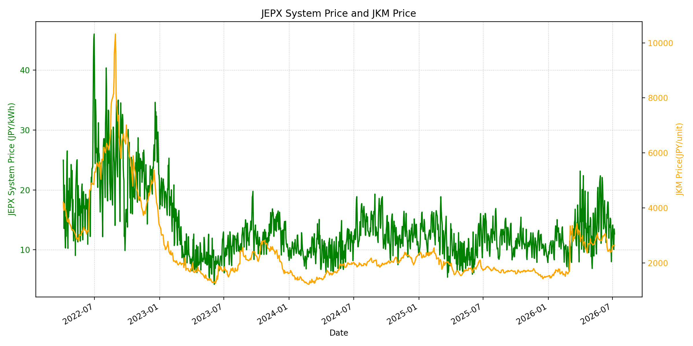
WTIの推移グラフ
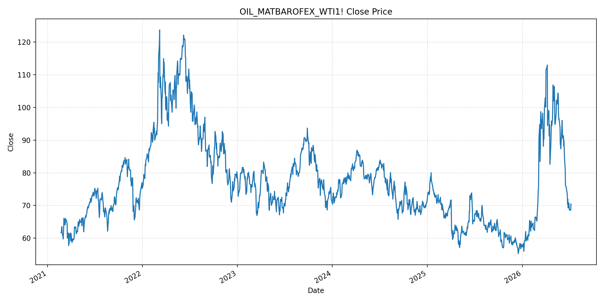
JEPXエリアプライスグラフ（直近一年分）
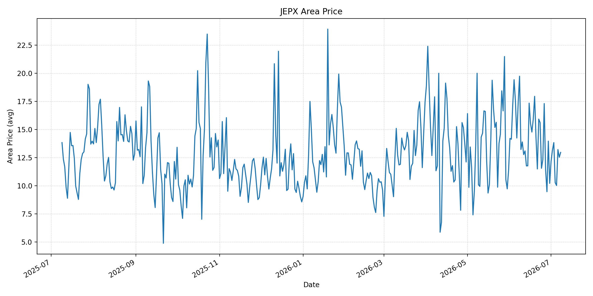
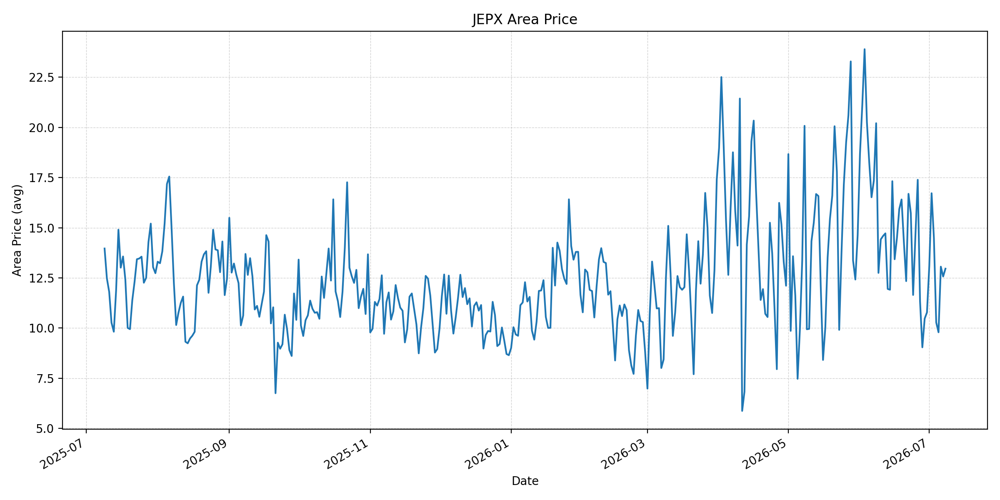
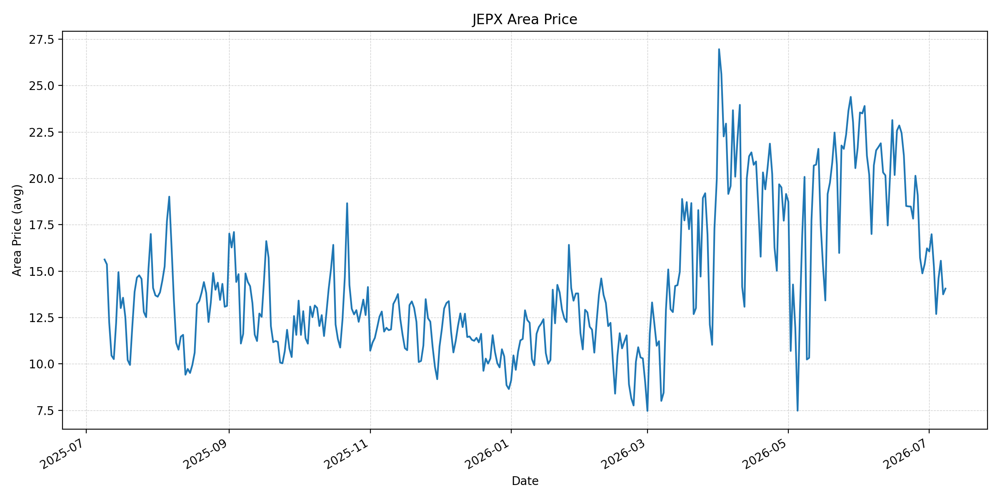
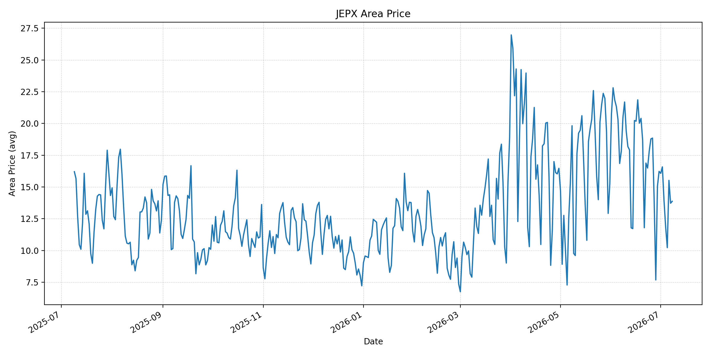
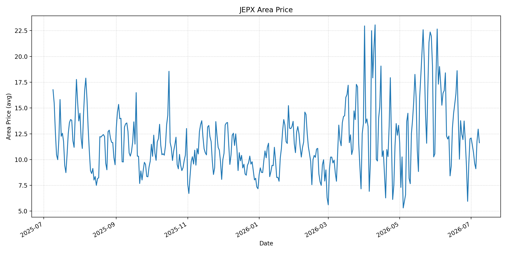
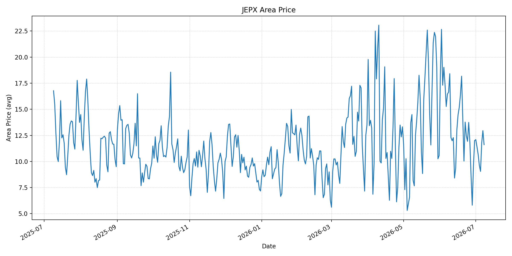
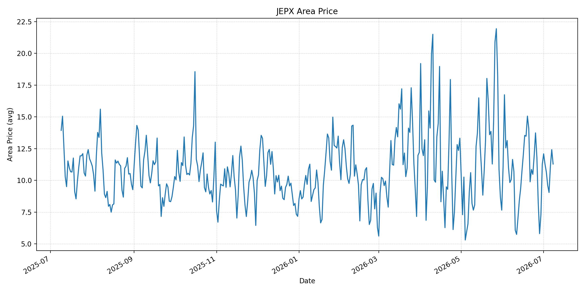
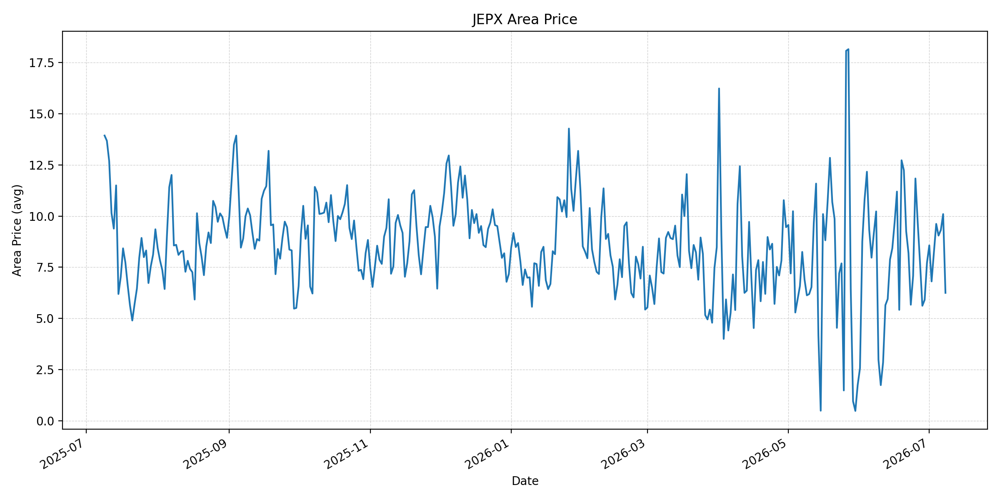
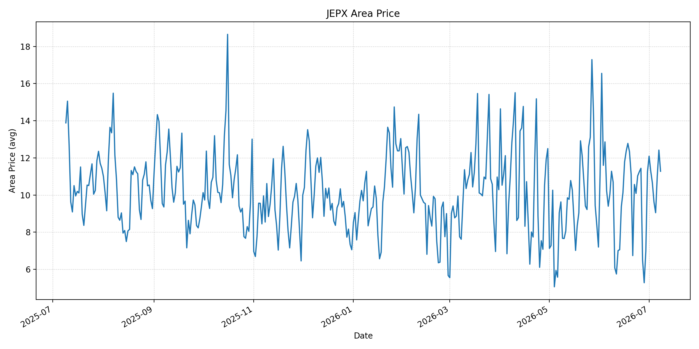
短期トレンド
JKMとJEPXシステムプライスの推移グラフ
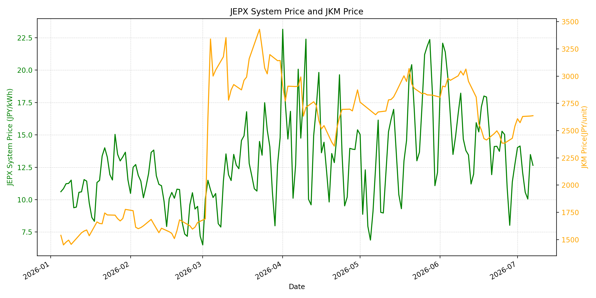
WTIの推移グラフ
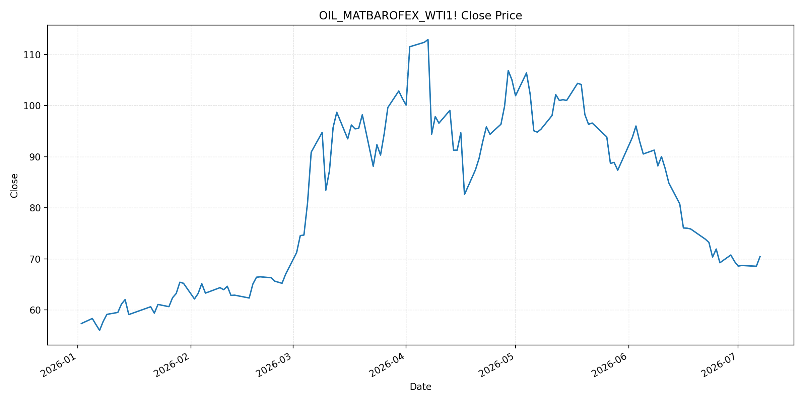
JEPXシステムプライス
JEPXは受渡日ベースの最新非空値で評価しています。最新値は 2026-07-08 分です。先週終値は 2026-07-01 時点の直近値、先月終値は 2026-06-30 時点の直近値で評価しています。
| エリア | 当日価格 | 前日価格 | 前日比（％） | 先週終値 | 先週比（％） | 先月終値 | 先月比（％） | 過去最高値 | 最高値比（％） |
|---|---|---|---|---|---|---|---|---|---|
| システム | 12.25 | 12.65 | -3.16 | 14.02 | -12.62 | 12.73 | -3.77 | 64.06 | -80.88 |
| 北海道 | 12.96 | 12.53 | 3.43 | 12.16 | 6.58 | 10.21 | 26.93 | 73.92 | -82.47 |
| 東北 | 12.96 | 12.57 | 3.10 | 13.09 | -0.99 | 10.78 | 20.22 | 84.92 | -84.74 |
| 東京 | 14.06 | 13.75 | 2.25 | 16.06 | -12.45 | 16.23 | -13.37 | 86.13 | -83.68 |
| 中部 | 13.87 | 13.72 | 1.09 | 16.07 | -13.69 | 16.23 | -14.54 | 52.06 | -73.36 |
| 北陸 | 11.63 | 12.95 | -10.19 | 12.09 | -3.80 | 12.01 | -3.16 | 46.48 | -74.98 |
| 関西 | 11.61 | 12.95 | -10.35 | 12.09 | -3.97 | 12.00 | -3.25 | 46.48 | -75.02 |
| 中国 | 11.29 | 12.42 | -9.10 | 12.09 | -6.62 | 11.26 | 0.27 | 46.48 | -75.71 |
| 四国 | 6.25 | 10.10 | -38.12 | 8.57 | -27.07 | 7.72 | -19.04 | 46.48 | -86.55 |
| 九州 | 11.28 | 12.42 | -9.18 | 12.09 | -6.70 | 11.24 | 0.36 | 40.54 | -72.18 |
LNG先物価格
最新値は 2026-07-07 の LNG(close) です。先週終値は 2026-06-30 時点の直近値、先月終値も 2026-06-30 時点の直近値で評価しています。
| 当日価格 | 前日価格 | 前日比（％） | 先週終値 | 先週比（％） | 先月終値 | 先月比（％） | 過去最高値 | 最高値比（％） |
|---|---|---|---|---|---|---|---|---|
| 2637.00 | 2634.00 | 0.11 | 2541.00 | 3.78 | 2541.00 | 3.78 | 10319.00 | -74.45 |
石油先物価格
最新値は 2026-07-07 の OIL(close) です。先週終値は 2026-06-30 時点の直近値、先月終値も 2026-06-30 時点の直近値で評価しています。
| 当日価格 | 前日価格 | 前日比（％） | 先週終値 | 先週比（％） | 先月終値 | 先月比（％） | 過去最高値 | 最高値比（％） |
|---|---|---|---|---|---|---|---|---|
| 70.44 | 68.55 | 2.76 | 69.50 | 1.35 | 69.50 | 1.35 | 123.70 | -43.06 |
ニュース
イラン情勢に関するニュース
- 2026年7月8日、Guardianは、米軍がホルムズ海峡を航行中の商船3隻への攻撃に対する報復として、イランの防空、港湾、沿岸監視、対艦ミサイル・ドローン発射施設を攻撃したと報じました。停戦覚書の履行は大きく不安定化しています。 参照: Guardian, 2026-07-08
- 2026年7月7日、Financial Timesは、米財務省がイランの石油販売を認める一般ライセンスを撤回したと報じました。米国側は、イランのタンカー攻撃が60日間の停戦合意の前提に反したと説明しています。 参照: Financial Times, 2026-07-07
ホルムズ海峡経由の石油・LNGに関するニュース
- WSJは、イランのタンカー攻撃はホルムズ海峡での支配力低下への懸念を示すものだと分析しました。米国支援のオマーン寄り航路を使う輸送が増え、ホルムズ経由の原油フローは7月初旬に日量800万バレルまで回復した一方、戦前水準の約半分にとどまっています。 参照: WSJ, 2026-07-08
- FTは、タンカー3隻への攻撃後、ホルムズ通航隻数が7月5日までの週に262隻から211隻へ低下し、カタールのLNG船 Al Areesh も反転したと報じました。LNG船の航路判断はまだ正常化していません。 参照: Financial Times, 2026-07-07
ホルムズ海峡経由でない石油・LNGに関するニュース
- 2026年7月7日、MarketWatchは、イランの船舶攻撃後に原油価格が上昇した一方、OPEC+増産やサウジのアジア向け値引きが供給潤沢感を示していると報じました。市場は供給不安と過剰供給の綱引きになっています。 参照: MarketWatch, 2026-07-07
- Barron'sは、OPEC+増産、ホルムズ輸送回復、サウジやUAEの輸出回復により、BrentとDubai市場がコンタンゴ化し、短期供給が潤沢であると報じました。非ホルムズ供給の増勢は、ホルムズリスクの価格転嫁を抑える材料です。 参照: Barron's, 2026-07-06
日本国内のイラン戦争に関係するニュース
- 過去24時間で、JEPX制度、国内電力需給ルール、または日本政府の対イラン戦争関連対策を直接変更する主要な新規公表は確認できませんでした。
- 関連する国内材料として、経済産業省は2026年5月20日、2026年度夏季は全エリアで安定供給に最低限必要な予備率3％を確保できるため節電要請を実施しないと発表しています。一方で、国際情勢の変化、異常気象、火力発電所の集中はリスクとして明記されています。 参照: 経済産業省, 2026-05-20
インサイト
ニュース事項による日本の電力市場への影響（短期：数日〜1週間）
- JEPXシステムプライスは 12.25 円/kWhで前日比 -3.16%、先週比 -12.62% と下落しました。東京は 14.06 円/kWh、中部は 13.87 円/kWhで小幅上昇ですが、広域では燃料リスクの再燃がまだ価格全体を押し上げていません。
- OILは 70.44 で前日比 2.76%、先週比 1.35% と反発しました。米国の追加攻撃とイラン油販売許可撤回は短期の上振れ材料ですが、OPEC+増産と供給回復があるため、価格上昇は現時点では限定的です。
- LNGは 2637.00 で前日比 0.11%、先週比 3.78% です。FTが報じるLNG船の反転は配船リスクを示しますが、JEPXの四国 6.25 円/kWhなど一部エリアの下落が短期価格を抑えています。
ニュース事項による日本の電力市場への影響（長期：1ヶ月〜半年）
- ホルムズ原油フローが戦前の約半分まで回復し、OPEC+増産と非ホルムズ供給が続けば、OILは過去最高値比 -43.06%、LNGは -74.45% と低位にとどまり、日本の火力燃料費は抑制されやすいです。
- 一方、米国の追加攻撃とイラン油販売許可撤回は、停戦覚書の実効性を低下させます。1ヶ月〜半年では、通航料、航路承認、LNG船保険、イラン産油輸出の扱いが再燃すれば、燃料本体価格より物流・保険費がJEPXの上振れ要因になります。
- 国内では節電要請なしの前提が維持されていますが、北海道は先月比 26.93%、東北は 20.22% と高く、地域差は残ります。燃料相場の落ち着きだけでなく、夏季需要と地域別供給力を合わせて監視する必要があります。